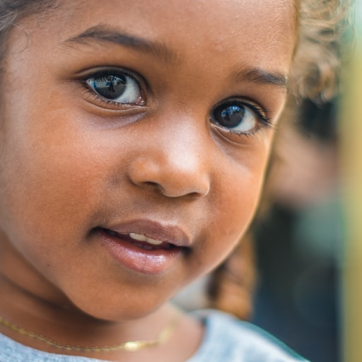

<!DOCTYPE html>
<html lang="en">
<head>
  <meta charset="UTF-8">
  <meta http-equiv="X-UA-Compatible" content="IE=edge">
  <meta name="viewport" content="width=device-width, initial-scale=1.0">
  <title>tfjs - face deta</title>

  <script src="./lib/js/tfjs.js"></script>
  <script src="./lib/js/blazeface.js"></script>
</head>
<body>

  <!--  -->
  <!--  -->
  
  
  <script>
    async function main() {
      // Load the model.
      const model = await blazeface.load();

      // Pass in an image or video to the model. The model returns an array of
      // bounding boxes, probabilities, and landmarks, one for each detected face.
      const returnTensors = false; // Pass in `true` to get tensors back, rather than values.
      const predictions = await model.estimateFaces(document.querySelector("img"), returnTensors);

      if (predictions.length > 0) {
        console.log('predictions  ', predictions);

        const canvas = document.createElement('canvas');
        const context = canvas.getContext('2d');
        const img = document.querySelector('img');
        canvas.width = img.width;
        canvas.height = img.height;
        context.drawImage(img, 0, 0);
        document.body.appendChild(canvas);
        /*
        `predictions` is an array of objects describing each detected face, for example:
        [
          {
            topLeft: [232.28, 145.26],
            bottomRight: [449.75, 308.36],
            probability: [0.998],
            landmarks: [
              [295.13, 177.64], // right eye
              [382.32, 175.56], // left eye
              [341.18, 205.03], // nose
              [345.12, 250.61], // mouth
              [252.76, 211.37], // right ear
              [431.20, 204.93] // left ear
            ]
          }
        ]
        */

        for (let i = 0; i < predictions.length; i++) {
          const start = predictions[i].topLeft;
          const end = predictions[i].bottomRight;
          const size = [end[0] - start[0], end[1] - start[1]];

          // Render a rectangle over each detected face.
          const rightEyeP = predictions[i].landmarks[0];
          const leftEyeP = predictions[i].landmarks[1];
          const fontSize = rightEyeP[1] - start[1];
          context.font = `${fontSize}px/${fontSize}px serif`;
          context.fillStyle = 'red';
          context.fillText('❤️', rightEyeP[0] - fontSize / 2, rightEyeP[1]);
          context.fillText('❤️', leftEyeP[0] - fontSize / 2, leftEyeP[1]);
        }
      }
    }

    main();
  </script>
</body>
</html>